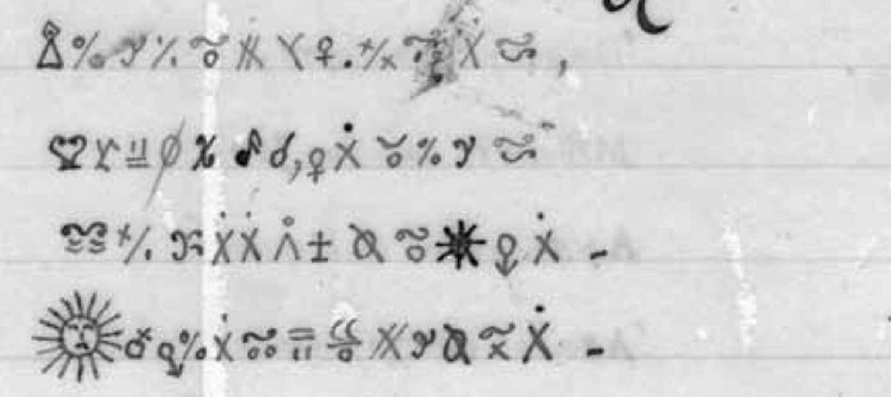

Not solved — and not solvable from the surviving text alone
Three of the four passages were transcribed here, 969 glyphs in all. The cipher poem turns out to be twenty lines of rhyming couplets, and its line lengths and rhymes both point to a French syllabary: one glyph for one spoken syllable. That identification is also why this attempt stops. A syllabary with this many signs needs roughly 800 to 2,000 glyphs before only one key fits the text, and the whole surviving corpus is about 1,200. Every known plaintext that could be tested failed. What is left needs a source outside this project: the original Debosnys copied from, or a key sheet in his papers.
01 What was already known
More than the usual summary suggests. In 2017 Brian, who writes the Sektu blog, transcribed the whole corpus — 1,188 glyphs of 425 types — decomposed the glyphs into sub-glyphs with a small grammar, and proposed that they are French syllables, the tilde marking nasalisation. That transcription was never published. An earlier version of this project’s tracker presented the glyphs’ systematic composition as a new observation; it was Sektu’s, and is credited to him here.
Two further leads were public. Matthew Brown showed in 2021 that almost every clear “poem” Debosnys left is copied, mostly from Thomas Moore, which suggested the enciphered texts might be copies too. And Nick Pelling noticed in 2015 that passage No. 9 holds the clear initials H. D. D. L. M. F. with dots under each letter counting the letters left out: Henry, Deletnack, Debosnys, then three words of 7, 7 and 6 letters.
02 What is established
The “monographe verse” is twenty lines of rhyming couplets

The last glyph of each line repeats in pairs. It is identical within 9 of the 10 couplets, and the tenth pair shares its base and differs only in where a cross is placed. Across couplet boundaries — lines 2 and 3, 4 and 5, and so on — it matches in none of 9. Even if any two glyphs matched a fifth of the time, nine of ten would come up by chance about four times in a million. It is the flat AABB rhyme of French couplet verse, and the rhyme of the first couplet returns in the ninth, as a sound would.
One glyph is one French syllable
If identical final glyphs carry the rhyme, glyphs stand for sound. Which size of sound is settled by comparing the poem with 279-unit samples of real verse:
| unit | per line | types in 279 | most frequent |
|---|---|---|---|
| Debosnys glyphs | 13.9 | 111 | 9.0% |
| French syllables | 13.5 | 166 | 3.8% |
| English syllables | 10.2 | 172 | 4.5% |
| French words | 8.6 | 174 | 4.7% |
| French letters | 37.4 | 26 | 14.7% |
Only syllables fit the line length, and the rhymes decide the language. In real rhyming couplets the final syllable is spelled identically 61% of the time in French verse but only 31% in Moore’s English. Nine identical endings in ten would happen with English syllables about three times in ten thousand. So the plaintext is most likely French, although nearly everything Debosnys is known to have copied was English.
The text behaves like language, not decoration: repeated glyph pairs occur at twice the rate of a shuffle of the same glyphs. Two details do not fit a plain syllabary. The dotted X is too frequent for a single syllable at 9%, and it appears doubled five times, perhaps one sign in two parts.
Three passages, one script
Transcribed glyph by glyph from the scans: the twenty-line poem (279 glyphs), the four cipher lines on page No. 10 (99) and the prose passage No. 9 (597), 969 glyphs of 333 types. The passages share their inventory — 47 of the poem’s 111 glyph types recur in No. 9, covering 58% of the poem — and the dotted X leads both at 9.0% and 8.2%. The weak point is identity: whether two similar composites are the same sign. The transcription files record each decision, and the least legible line lies under a water stain.
03 What is excluded
Every search here was first run on a planted text — real French encoded the same way, with noise — to prove it would find a hit if one were there. None of the real searches produced one.
The four cipher lines of No. 10 do not encode the French poem written under them
The obvious crib: about 93 glyphs above a clear poem whose first eight lines have about 93 syllables, and both end in a question mark. Aligning glyphs to syllables and scoring how consistently each glyph maps, the real pairing scores 58 — exactly what random French verse scores (median 59). A planted encoding of the same poem scores 86 to 88 against a control maximum of 80. The lines are more likely the end of No. 9.
No match in 7,821 couplet windows of French poetry
Twenty-eight volumes — Racine, Corneille, Molière, Voltaire, Boileau, Chénier, Hugo, Musset, Gautier, Baudelaire, Verlaine — cut into every 20-line window in rhyming couplets and aligned against the poem line by line. A planted encoding of one real window ranks first of 7,821 by a wide margin; the poem’s best matches form a smooth tail with no outlier. The same holds for Delille’s verse translation of the Aeneid, prompted by the lines of Virgil copied beneath the poem.
Not Moore, not Stoddart, not his own English copies
Line-length profile and couplet structure against Moore’s complete poems, Lalla Rookh, Stoddart and Debosnys’s own clear poems: best fits at the chance level for seven thousand windows, and Moore’s couplet lines run three or four syllables short.
The glyphs are not stacks of letters
Read each glyph’s component marks as letters in some order and search for the key: the real glyph order scores no better than the same glyphs shuffled, in French or English.
04 Why it stops here
Ciphertext-only attack needs enough text to pin the key down. For a substitution, that threshold is the unicity distance: the key’s information divided by the language’s redundancy per symbol. French verse syllables carry 7.7 bits each under a bigram model; a key for 333 glyph types, drawn from a syllable inventory of 600 to 9,000, carries 3,100 to 4,400 bits. The threshold comes out at about 800 to 2,000 glyphs — with a perfect model and a perfect transcription. The whole surviving corpus is about 1,200.
The experiment agrees. Real French verse was encoded as a clean syllabary, one glyph per syllable and no noise, and attacked with a syllable language model trained on 1.15 million syllables:
| glyphs | glyph types | text recovered | guessing the commonest syllable |
|---|---|---|---|
| 1,000 | 364 | 0.0% | 3.2% |
| 5,000 | 944 | 5.4% | 3.3% |
| 20,000 | 1,810 | 4.3% | 2.9% |
At the Debosnys length the solver recovers nothing. A stronger solver would do better on far longer texts, but none can beat the information limit. If Debosnys wrote a syllabary — and the rhymes say he did — this cipher falls only to a crib.
05 What would break it
- His papers. The Essex County Historical Society holds the originals. A clear copy of the poem, a draft, or a key sheet among them would turn this into an afternoon’s work.
- The source text. If the poem or No. 9 is copied like his clear poems, finding the original is the whole job. The search tool is built and tested; the likeliest ground not yet covered is popular French song and verse of the 1860s and 70s, the kind a soldier and drifter would have known by heart.
- Sektu’s transcription. An independent reading of the full corpus would settle the glyph-identity decisions that weaken every test.